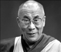

1935 yılında Çin’in batısında Tenzin Gyatso isimli bir bebek doğdu. Ailesinin dokuz çocuğundan beşincisiydi. Hayatının ilk iki yılını izole bir dağ köyünde geçirdi. Ailesi burada patates yetiştiriyordu.

Tenzin’in köyünden yüzlerce kilometre güneyde ise Budist rahipler toplanmıştı. Lhasa Sarayı’nda Antik Tibet Krallığı’na yeni bir lider seçmek için uğraşıyorlardı. Önceki liderleri Thubten Gyatso (1879–1933) kırk yıllık hükümdarlığının ardından öldüğünde Dalai Lama makamı boş kalmıştı.
Geleneğe göre Tibet’in yöneticisi olan kişi sıradan bir insan değildi. Her Dalai Lama 1391 yılında doğan bir Budist bilgenin reenkarnasyonu olarak kabul ediliyordu. Önceki Dalai Lama Thubten, bilgenin on üçüncü reenkarnasyonuydu. Sıradaki Dalai Lama ise Tibet dağlarında bir yerdeydi. Keşişlerin şimdi onu arayıp bulması gerekiyordu.
Bir dizi işareti takip eden keşişler sonunda patates yetiştiricisinin kapısına geldiler. Ona yeni doğan çocuğunun Dalai Lama olduğunu söylediler. Çocuk kendisini 20. yy’ın en önemli siyasi ve ruhani liderlerinden biri yapacak olan eğitime alındı. Köyünden alınan çocuk Tibet’in başkentine getirildi. Burada Budizm eğitimi aldı ve liderlik sanatının inceliklerini öğrendi. 1950 yılında on beş yaşındayken resmen tahta çıktı.
Bir ay sonra Çin Tibet’i işgal etti. Komünist liderler Tibet’in Çin’in tarihi bir parçası olduğunu iddia ediyordu. Onlara göre Dalai Lama’nın makamı anakronik bir yapı, bir hurafeydi. Dalai Lama başlarda Çinliler’le anlaşmaya çalıştı. Bölgenin özgün Budist kültürünü yaşatmak için onlara boyun eğdi. 1959 yılında Çinliler’i ülkeden çıkarmak için harekete geçse de başarısız oldu. Çok geçmeden halen yaşamını sürdürdüğü Hindistan’a sürgüne gönderildi.
Dalai Lama bu tarihten itibaren Çin için sürekli bir sorun haline geldi. Dünyayı dolaşarak Tibet’in özerkliği için destek aradı. 1989 yılında Nobel Barış Ödülü’nü kazandı. 2007 yılında ABD Kongresi tarafından Kongre Altın Madalyası ile ödüllendirildi. 2008 yılının Mart ayında yaşanan huzursuzlukların ardından hayata geçen baskıcı Çin politikalarını kınadı.
Ek Bilgiler
1- Çin’de Dalai Lama’ya çok farklı bir gözle bakılmaktadır. Pek çok Çinli onu tehlikeli bir ayrılıkçı olarak görmektedir. Onlara göre Dalai Lama, Batılı güçlerin bir aracıdır. 1960’larda Çin karşıtı savaşçıları eğitmek için CIA’dan para aldığı söylentileri bile dolaşmaktadır.
2- 2007 yılında Çin hükümeti Dalai Lama ölünce yerine geçecek kişinin Çin hükümeti tarafından onaylanması gerektiğini ilan etti. Pek çok Tibetli bu teze karşı çıktı.
3- Eski Tibet teokrasisi içinde mutlak bir gücü olmasına rağmen, Dalai Lama günümüzde bağımsızlık taleplerinin olmadığını, sadece bölge için daha fazla kültürel özerklik istediklerini ifade etmektedir.